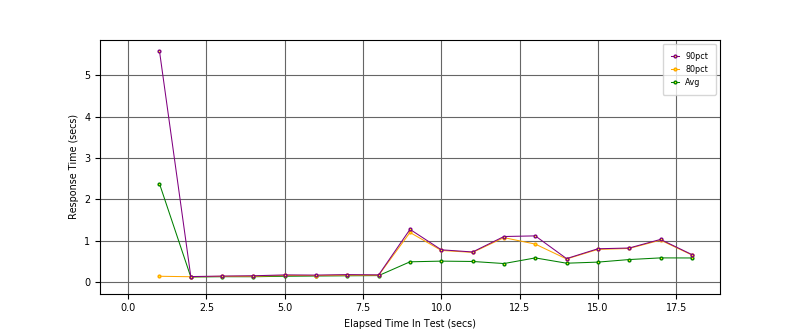
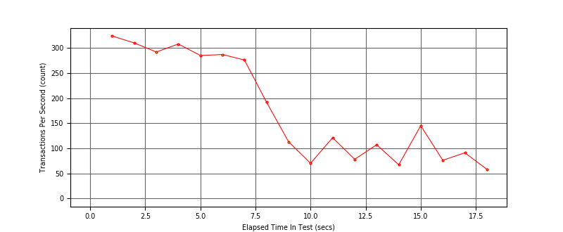

Performance Results Report
Summary
transactions: 3260
errors: 0
run time: 60 secs
rampup: 60 secs
test start: 2018-07-23 10:56:27
test finish: 2018-07-23 10:56:44
time-series interval: 1 secs
workload configuration:
| group name | threads | script name |
|---|
| user_group-1 | 60 | v_perf.py |
All Transactions
Transaction Response Summary (secs)
| count | min | avg | 80pct | 90pct | 95pct | max | stdev |
|---|
| 3260 | 0.007 | 0.476 | 0.297 | 0.726 | 0.892 | 38.141 | 2.419 |
Interval Details (secs)
| interval | count | rate | min | avg | 80pct | 90pct | 95pct | max | stdev |
|---|
| 1 | 324 | 324.00 | 0.035 | 2.376 | 0.142 | 5.579 | 21.996 | 38.141 | 7.302 |
| 2 | 310 | 310.00 | 0.080 | 0.124 | 0.131 | 0.135 | 0.141 | 0.200 | 0.013 |
| 3 | 292 | 292.00 | 0.073 | 0.131 | 0.139 | 0.147 | 0.159 | 0.196 | 0.017 |
| 4 | 308 | 308.00 | 0.070 | 0.131 | 0.143 | 0.154 | 0.169 | 0.205 | 0.020 |
| 5 | 285 | 285.00 | 0.046 | 0.143 | 0.163 | 0.175 | 0.181 | 0.225 | 0.024 |
| 6 | 287 | 287.00 | 0.065 | 0.148 | 0.160 | 0.170 | 0.188 | 0.260 | 0.023 |
| 7 | 276 | 276.00 | 0.076 | 0.154 | 0.171 | 0.182 | 0.197 | 0.243 | 0.025 |
| 8 | 192 | 192.00 | 0.056 | 0.159 | 0.168 | 0.176 | 0.199 | 0.220 | 0.019 |
| 9 | 113 | 113.00 | 0.009 | 0.491 | 1.200 | 1.275 | 1.303 | 1.328 | 0.466 |
| 10 | 70 | 70.00 | 0.008 | 0.508 | 0.766 | 0.781 | 0.793 | 0.802 | 0.323 |
| 11 | 121 | 121.00 | 0.019 | 0.499 | 0.719 | 0.729 | 0.742 | 0.756 | 0.247 |
| 12 | 78 | 78.00 | 0.008 | 0.449 | 1.075 | 1.102 | 1.109 | 1.120 | 0.416 |
| 13 | 107 | 107.00 | 0.007 | 0.586 | 0.919 | 1.117 | 1.130 | 1.149 | 0.419 |
| 14 | 67 | 67.00 | 0.034 | 0.457 | 0.560 | 0.569 | 0.574 | 0.581 | 0.171 |
| 15 | 145 | 145.00 | 0.015 | 0.484 | 0.791 | 0.806 | 0.817 | 0.835 | 0.290 |
| 16 | 76 | 76.00 | 0.010 | 0.546 | 0.814 | 0.825 | 0.835 | 0.851 | 0.331 |
| 17 | 91 | 91.00 | 0.011 | 0.586 | 1.015 | 1.032 | 1.043 | 1.056 | 0.430 |
| 18 | 58 | 58.00 | 0.038 | 0.584 | 0.657 | 0.667 | 0.674 | 0.681 | 0.149 |
Graphs
Response Time: 1 sec time-series

Response Time: raw data (all points)

Throughput: 5 sec time-series
